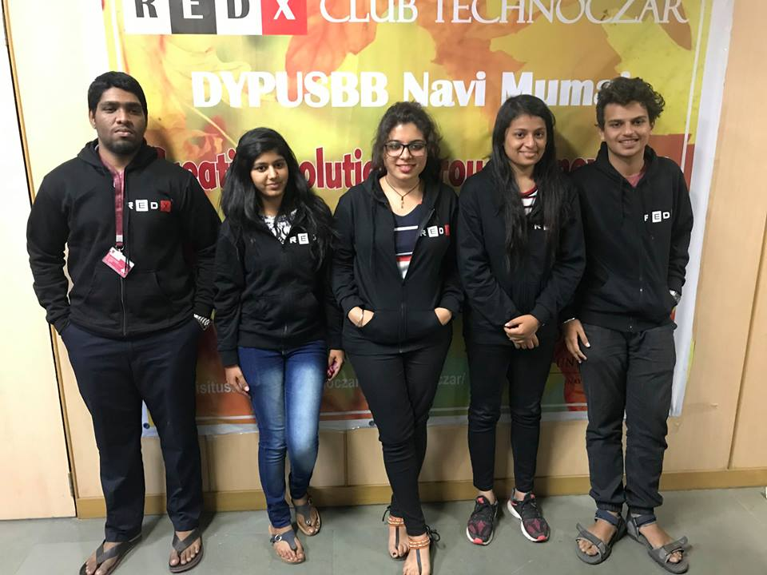
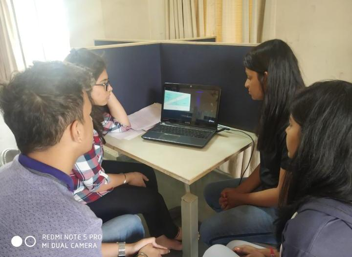

VINNIE THAWANI AND TEAM MEMBERS
Working on :
COMBATING THE ISSUE OF PREDICTION OF PRETERM DELIVERIES USING ARTIFICIAL INTELLIGENCE.


The videos of Prof. Ramesh Raskar sir are really good and lucid. He speaks with confidence and brings good interest in the listeners. I feel he has good oratory skills. Raskar sir always starts with speaking about the specific objective of his talks which gives some idea about what the topic is about. These videos are really very helpful for the generation. He always speaks confidently and gives the listeners a fair knowledge of the topic. He is a great personality and the person with utmost knowledge of the field. He talks about scientific things and always urges them to be looked upon. I feel he is really a great example for all of us.He has a great knowledge of this field. Interesting view of their videos comes in and we get inspired by him. These videos are really informative as well as motivating. He has a good command over his subject . His videos helps the students get useful information on the topic.He taught us discipline and his dedication towards the subject has always been beneficial for the students.He is setting a great example for our generation.
Healthcare sector (Doctors),Educational institutions,NGO's for helping the child,Research sector,Public health reports,Family of the child
Lack of accuracy,Lack of knowledge,Poor connectivity to rural areas,Lack of certain technologies in India.,Poor outreach,Can detect true labor only a week prior to the delivery.,Sudden deliveries due to shocks can't be detected.,Reduction of death rate of infants due to preterm,Reduction of disabilities in children due to preterm.,Increased accuracy.,Detection of preterm quite in advance.

20th June 2019 1.00 PM As a part of the project on ‘Segregation of Waste using AI’ a field visit was conducted to Daily Dump Organisation in Airoli, Navi Mumbai Mr. Prem Bhatia at Daily Dump gave his valuable time to discuss the project and also answer the survey questions. He also shared his organisation’s activities on the various methods of waste management.